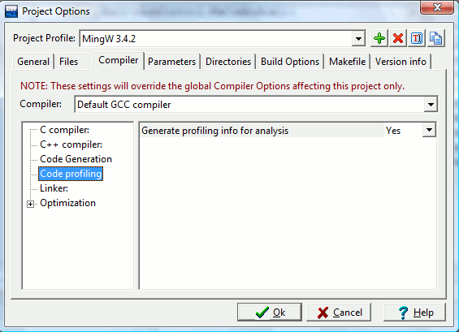
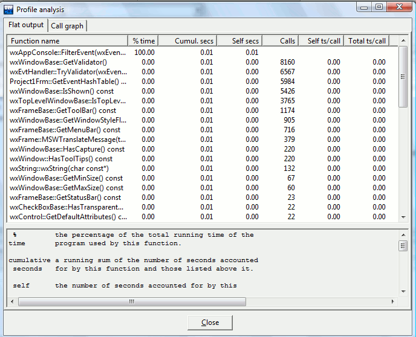

Profiling reports back how your program performed during runtime. It provides you with a list of all of your function and process calls along with their execution time.
You must enable ‘Generate profiling info for
analysis’ in Project menu under Project
Options then Compiler sheet, Code
Generation section.

Then compile your project as usual, and run it (profiling information are generated/refreshed each time you execute your program).
When you are done, click the Execute menu, then Profile analysis. The profiling window will appear and show you a profile of the execution of your program.
